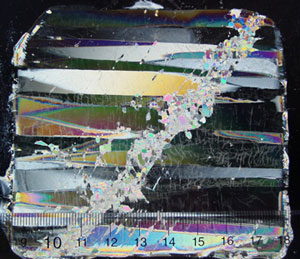

Ice Research Laboratory

Optical micrograph showing a thin-section (through crossed polarizing filters) of columnar-grained fresh-water ice rapidly loaded to terminal failure a under a high degree of triaxial confinement. Note the plastic shear fault, inclined ~ 45 degrees to the direction of shortening, and the recrystallized grains within the fault.(N. Golding, 2009).
Optical micrograph showing a thin-section (through crossed polarizing filters) of columnar-grained fresh-water ice rapidly loaded to terminal failure a under a high degree of triaxial confinement. Note the plastic shear fault, inclined ~ 45 degrees to the direction of shortening, and the recrystallized grains within the fault.(N. Golding, 2009).
Dartmouth's Ice Research Laboratory (IRL) is internationally recognized as a unique university facility, dedicated to characterizing the microstructure and the mechanical and electrical properties of ice and icy materials. The IRL was founded in 1983 and is shared amongst a number of academic departments and investigators. The IRL is a place where sponsored research takes place, by faculty and independently by undergrad/grad students and visitors. The IRL's mission is two-fold: to advance fundamental understanding of ice-related phenomena of major scientific and technological significance, and to educate the next generation of polar-oriented researchers.